Получайте наклейки
1 наклейка за каждые 300 ₽ в чеке
Обменивайте на скидку
%

«Нева металл посуда» — российский бренд родом из Санкт-Петербурга, уже 23 года выпускающий широкий ассортимент посуды для приготовления: сковороды, воки, грили, жаровни, кастрюли, казаны и многое другое.
Все изделия из литого аллюминия и имеют высококачественное многослойное антипригарное покрытие, позволяющее готовить с минимальным количеством масла, сохраняя вкус и пользу любимых блюд.
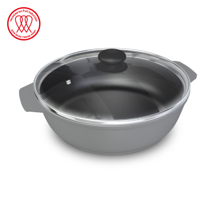
Жаровня Spicy SP6530i, индукционная,
3 л
- Крышка из жаростойкого стекла 26 см в комплекте
- Литой алюминий – не деформируется и не качается на плите
- Большой диаметр рабочей поверхности
- Технология «Full Induction» для быстрого разогрева
- Антипригарное покрытие на водно-кремниевой основе
- Подходит для всех типов плит
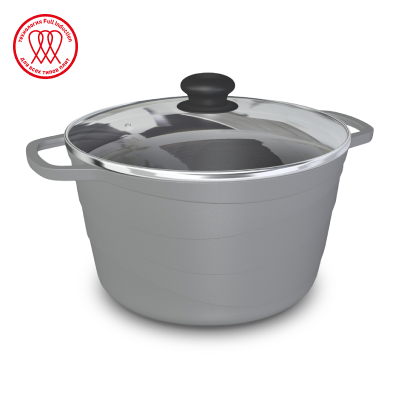
Кастрюля Spicy SP6650i, индукционная,
5 л
- Крышка из жаростойкого стекла 24 см в комплекте
- Литой алюминий – не деформируется и не качается на плите
- Технология «Full Induction» для быстрого разогрева
- Антипригарное покрытие на водно-кремниевой основе
- Подходит для всех типов плит

Более 60 лет французский бренд Tefal создает для вас инновационную посуду и технику, призванную улучшить вашу домашнюю жизнь!
С продукцией от Tefal вы погрузитесь в атмосферу уюта и гармонии. Запах вкусного ужина и порядок в доме будут радовать вас каждый день.
Техника для кухни Tefal
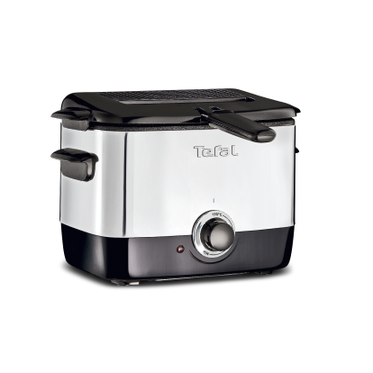
Фритюрница FF220015
- Обжаривание до 600 г
- Вместимость масла: 1 л
- Чаша с антипригарным покрытием
- Съемная крышка с окном
- Регулируемый термостат со световым индикатором
- Компактность хранения
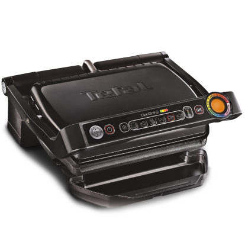
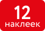
Гриль OptiGrill GC712834
- Автоопределение толщины ингредиентов до 1 мм
- Наклон рабочей поверхности: 7°
- 6 автоматических программ
- Поддон для стекания лишнего жира
- 4 уровня t° в ручном режиме
- Индикатор степени прожарки
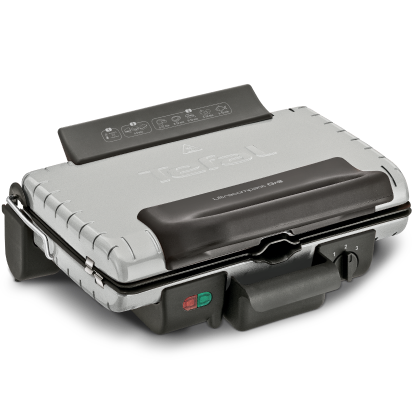
Гриль GC302B26
- Антипригарное покрытие
- Термостат, контролирующий t° пластин
- Съемные алюминиевые панели и лоток для сбора жидкости
- Регулируемый шарнир под любую толщину ингредиентов
- Вертикальное хранение
- 2 в 1: барбекю и гриль
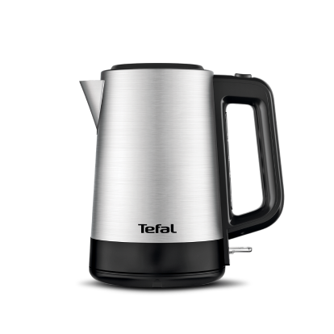
Чайник BI520D10
- Мощность: 2200 Вт
- Объем: 1.7 л
- Фильтр против накипи
- Автоотключение
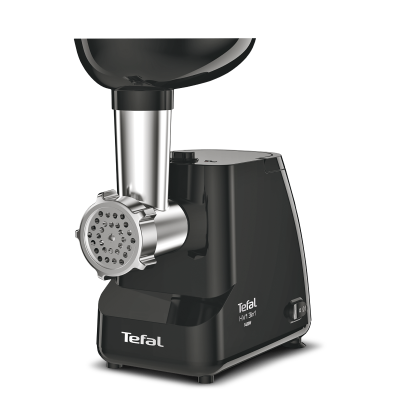
Мясорубка NE111832
- Мощность: 1400 Вт
- Производительность: 1.7 кг/мин
- 2 решетки из нержавеющей стали 5 и 7 мм
- Функция реверса
- Насадка для приготовления кеббе и колбасок
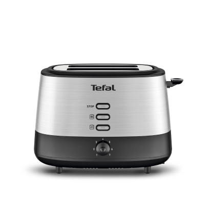
Тостер TT520D10
- 7 степеней поджаривания тостов
- Съемный поддон для крошек
- Равномерное обжаривание
- Функция подогрева и разморозки
Ножи и ножницы Tefal
Все ножи и ножницы имеют удобную форму рукоятки и выполнены из нержавеющей стали.
Нож для овощей K1701174,
9 см
Нож универсальный K1700574,
12 см
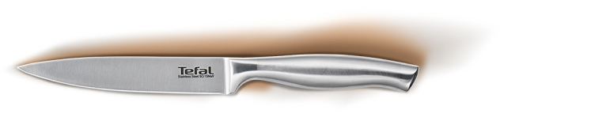
Нож для хлеба K1700474,
20 см
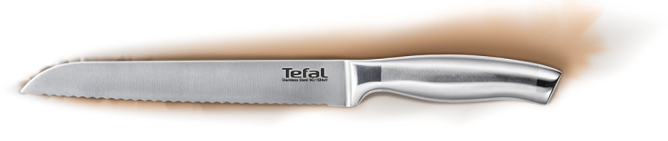
Нож поварской K1700274,
20 см
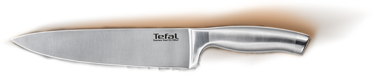
Нож для измельчения K1701274,
20 см
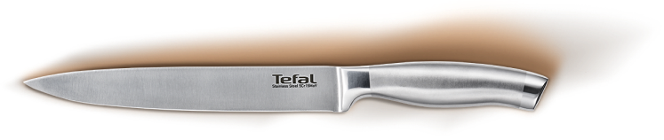
Нож сантоку K1700674,
18 см
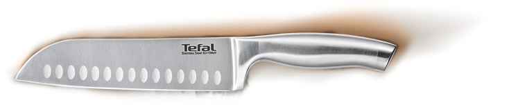
Ножи для стейка K1700879, 4 шт.,
11 см
Ножницы для птицы K1700774,
25.5 см
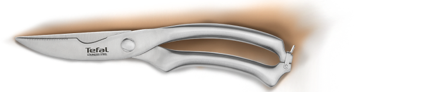
Кухонные ножницы K1701374,
20.5 см
Наборы и аксессуары для приготовления Tefal

Набор из 10 предметов Duetto+ TEFAL G719SA74
(ковш 1.5 л, кастрюля для пасты 6.1 л, кастрюли 2, 2.9, 5 л, крышки 16, 18, 20, 22, 24 см)
- Премиальная нержавеющая сталь
- Специальное отверстие для слива
- Ручки с заклепочным креплением
- Удобная мерная шкала
- Подходит для всех типов плит
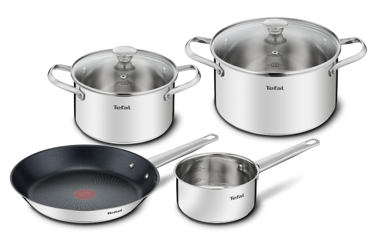
Набор из 6 предметов Cook Eat B922S634
ковш 1.5 л, кастрюли 3.1 и 5,4 л, крышки 20 и 24 см, сковорода 28 см)
- Премиальная нержавеющая сталь
- Ручки с заклепочным креплением
- Удобная мерная шкала
- Антипригарное покрытие Titanium
- Индикатор Thermo-Signal™
- Подходит для всех типов плит
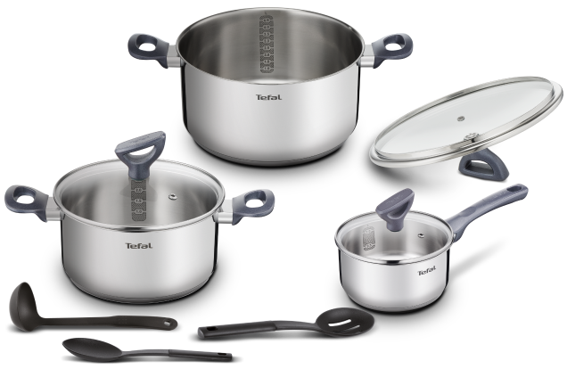
Набор из 9 предметов Daily Cook G712S974
(ковш 1.5 л, кастрюли 3 и 5.3 л, крышки 20, 24 и 16 см, 3 аксессуара для приготовления)
- Премиальная нержавеющая сталь
- Технология HIBB
- Удобная мерная шкала
- Ненагревающиеся ручки
- Подходит для всех типов плит
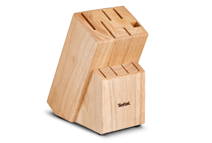
Блок для ножей K0973114
- Традиционый дизайн
- Изготовлен из дерева
- 10 отверстий
- Нескользящие ножки
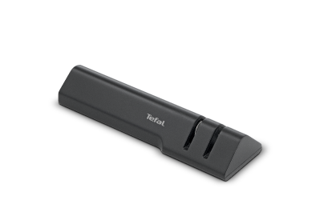
Точилка для ножей K2640574
- Удобно держать
- Легко использовать
- Нескользящие ножки для безопасности
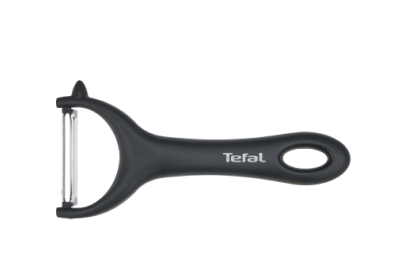
Овощечистка K2643074
15 см